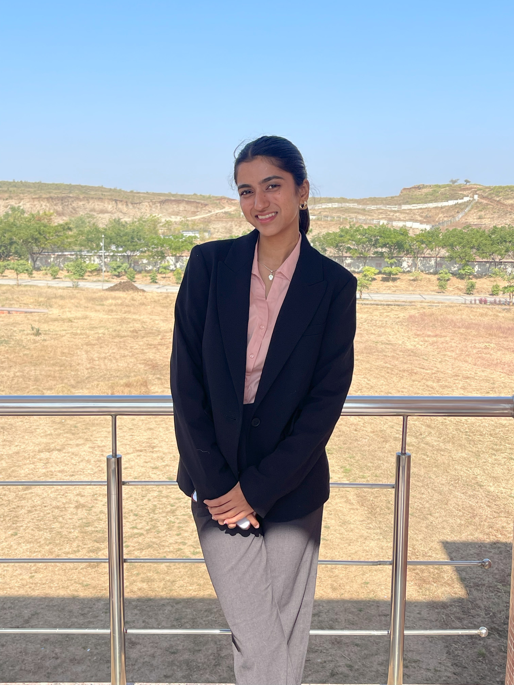

A detail-oriented visual communication designer passionate about brand identity and storytelling. Committed to high-quality work and eager to contribute and grow.
National Institute of Fashion Technology
B.Des. in Fashion Communication (2022 – 2026)
DAV Public School
Class 12 – 85% (2020 – 2022)
DAV Public School
Class 10 – 94.3% (2019 – 2020)
Communication & Vocational – Trinity (2016–2019)
Advanced Abacus – UCMAS (2010–2015)
Logo Design Freelancer
Dataneers India Pvt Ltd – July 2024